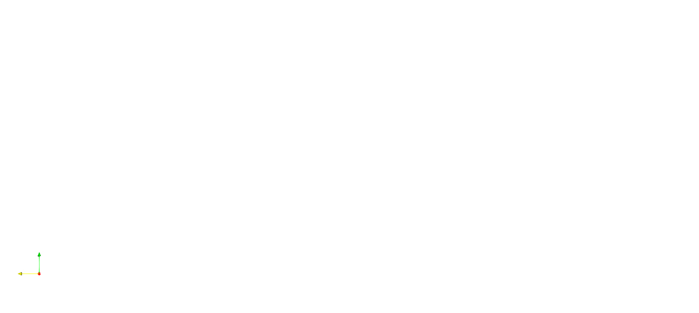
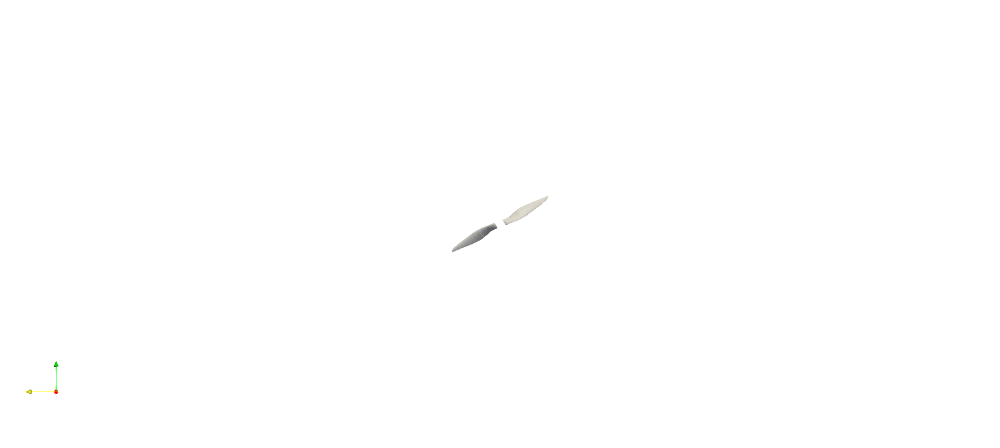

First Steps
Geometry Basics
In this tutorial, we'll begin by defining the geometry for a simple wing. Note that all the functions used are described in the Reference section of this documentation if you would like further information at any point. Before you begin this tutorial, it is expected that you've already installed the necessary components of FLOWUnsteady, and that you are familiar with visualization in Paraview.
First things first, we need to include the FLOWUnsteady components
import FLOWUnsteady
uns = FLOWUnsteady
vlm = uns.vlmLet's begin with a single section, symmetric wing. We'll start by defining some basic geometry.
span = 1.0 #wing span
aspectratio = 10.0 #wing aspect ratio
taperratio = 0.5 #wing taper ratio
wingtwist = 0.0 #wing twist
wingsweep = 10.0 #wing sweep in degrees
wingdihedral = 7.0 #wing dihedral in degreesThen we'll call the simpleWing() function to create a simple wing object.
mainwing = vlm.simpleWing(span,aspectratio,taperratio,wingtwist,wingsweep,wingdihedral)Congratulations! You've created your first wing object.
If you want, you can take a moment to explore the contents of your newly created mainwing. You can do so using fieldnames(mainwing) and poking around. The Reference section will have more info on the contents of the wing object.
Next, let's create a wing system.
system = vlm.WingSystem()You now have an empty wing system, so let's add our mainwing object to it with the name "mainwing."
vlm.addwing(system,"mainwing",mainwing)Now that we have a wing system, let's save it as a .vtk file so we can view it in paraview. In order to do so, we are required to define a freestream velocity.
Vinf(x,t) = [1,0,0] #non-dimensional function defining free stream velocity
vlm.setVinf(system, Vinf) #set freestream velocity for the systemWe will also want to set some parameters for saving files and set up our file system to put the files where we want.
Make sure you have set your save_path to something non-important so the rm command doesn't delete anything you'll miss.
run_name = "tutorial" #define identifier at beginning of file names
save_path = "./simplewing/" #define directory where files will be saved
run(`rm -rf $save_path`) #clear out directory where files will be saved
run(`mkdir $save_path`) #re-create directory freshProcess(`mkdir ./simplewing/`, ProcessExited(0))Finally, we can save the files.
vlm.save(system, run_name; path=save_path) #save geometry in a .vtk file formatAnd now we can view our wing in Paraview using the command run(`paraview --data="$(save_path)/$(run_name)_mainwing_vlm.vtk"`) (assuming you've set up an alias for paraview on your computer).

Adding a Rotor
Now that we have a basic wing, let's go ahead and add a rotor. We'll use some data for the rotor that already exists in FLOWUnsteady. You can visit the How-to guides for more information on creating your own rotor database.
rotor_file = "apc10x7.csv" # Rotor geometry
data_path = uns.def_data_path # Path to rotor databaseWith the rotor data, we can generate our rotor. This might take a minute or so to run. We supress the output here with a semi-colon as it prints a large output.
rotor_file = "apc10x7.csv" # hide
data_path = uns.def_data_path # hide
rotor = uns.generate_rotor(rotor_file; pitch=0.0,
n=10, CW=true, ReD=1.5e6,
verbose=true, xfoil=true,
data_path=data_path,
plot_disc=false);And then we can generate a rotor object, where we again supress the output.
rotors = vlm.Rotor[rotor];This will put the rotor at the default location and orientation which we will define here since we now need to move the rotor relative to the wing which is already at this location.
vehicleorigin = [0.0; 0.0; 0.0]
vehicleaxis = [1.0 0.0 0.0; 0.0 1.0 0.0; 0.0 0.0 1.0]3×3 Array{Float64,2}:
1.0 0.0 0.0
0.0 1.0 0.0
0.0 0.0 1.0To move the rotor, we need to define a new origin point.
rotororigin = [-0.1; 0.0; 0.0]3-element Array{Float64,1}:
-0.1
0.0
0.0Then we can use that origin to set the rotor coordinate system in order to move the rotor.
for rotor in rotors
vlm.setcoordsystem(rotor, rotororigin, vehicleaxis; user=true)
endwhich we can put in a tuple that stores our rotor system(s).
rotor_systems = (rotors,);We also need to add it to our overall system.
for rotor in rotors; vlm.addwing(system, run_name, rotor); end;Like setting the Vinf parameter for the main wing, we need to give our rotor an RPM as well.
RPMref = 6000 #reference RPM
for rotor in rotors; vlm.setRPM(rotor, RPMref); end;We should now be able to visualize our wing with a rotor.
run(`rm -rf $save_path`)
run(`mkdir $save_path`)
vlm.save(system, run_name; path=save_path)
run(`paraview --data="$(save_path)/tutorial_mainwing_vlm.vtk;tutorial_tutorial_Blade1_vlm.vtk;tutorial_tutorial_Blade2_vlm.vtk;tutorial_tutorial_Blade1_loft.vtk;tutorial_tutorial_Blade2_loft.vtk;"`)
Other Systems
In order run an analysis with our little airplane, we're going to have to add a few more systems
VLM Systems
First let's create a VLM system and add our main wing to it.
vlm_system = vlm.WingSystem()
vlm.addwing(vlm_system, "mainwing", mainwing)Wake Systems
Next, let's create a wake system and add both the VLM system and rotor.
wake_system = vlm.WingSystem()
vlm.addwing(wake_system, "SolveVLM", vlm_system)
for rotor in rotors; vlm.addwing(wake_system, run_name, rotor); end;Tilting Systems
We'll also need to identify tilting objects, but since we don't have any tilting components yet, we'll just initialize an empty tuple. For more information on adding tilting objects (like control surfaces, or tilt-wings) see Define Systems.
tilting_systems = ();()Kinematic Maneuvers
Now let's define our maneuver. For now, let's just have the airplane fly in a straight and level. We are going to have to define non-dimensional functions for the velocity for the vehicle, the angle for the vehicle, the angles for our tilting systems, and the rotation rate for the rotor(s).
The functions that define the kinematic maneuver must be defined non-dimensionally. For more information on this, see Define Kinematic Maneuvers.
We'll start with the vehicle velocity function.
Vvehicle(t) = [-1.0,0.0,0.0]Vvehicle (generic function with 1 method)Next, let's define the vehicle angle.
anglevehicle(t) = zeros(3)anglevehicle (generic function with 1 method)Now the angle of the titling systems (we don't have any, so it's just empty again).
angle = ();()Lastly, we need to define a rotation rate function for each of the rotors.
RPM_fun(t) = 1.0
RPM = (RPM_fun, )(Main.##ex-#402.RPM_fun,)With all the individual elements defined, we can create a maneuver
maneuver = uns.KinematicManeuver(angle, RPM, Vvehicle, anglevehicle)We can also plot the maneuver to quickly see what we made.
uns.plot_maneuver(maneuver)A plot of the maneuver is helpful, but visualizing in Paraview can also be helpful. In order to do that, however, we first need to set up a simulation.
Setting up a Basic Simulation
We already have most of the elements we need to define a simulation, but need to create a vehicle to be used in the simulation with the systems we've already defined.
vehicle = uns.VLMVehicle( system;
tilting_systems = tilting_systems,
rotor_systems = rotor_systems,
vlm_system = vlm_system,
wake_system = wake_system,
);In addition, we still need to define a reference velocity, the total time for the simulation, and a few initial conditions.
Vref = 10.0 #define a reference velocity for the vehicle
ttot = 1.0 #define a total simulation time, in seconds
nsteps = 300 #define the number of steps the simulation will take
#initial conditions
tinit = 0.0 #initial time
Vinit = Vref*maneuver.Vvehicle(tinit/ttot) #initial linear velocity
Winit = zeros(3) #initial angular velocityWith everything now defined, we can create a simulation
simulation = uns.Simulation(vehicle, maneuver, Vref, RPMref, ttot; Vinit=Vinit, Winit=Winit, t=tinit);Finally, we can visualize the maneuver in Paraview.
```@example tut filenames = uns.visualizekinematics( simulation, nsteps, savepath; runname=runname, prompt=false, paraview=false )
run(paraview --data="$save_path/$filenames") ```